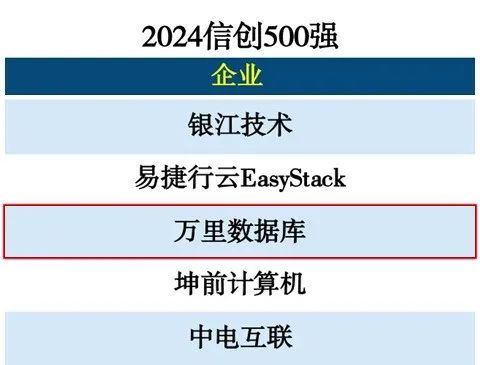

荣誉 | 连续4年上榜！万里数据库再度入选「中国信创500强」
近日，中国科学院《互联网周刊》联合德本咨询、中科院信息化研究中心、eNet研究院共同发布“2024中国信创500强”榜单。万里数据库凭借领先的自主研发能力、创新产品技术成果、深厚行业实践，以及在信创市场的长期耕耘，连续4年跻身《中国信创500强》榜单，充分证明了万里数据库在国产数据库信创领域的市场地位与技术实力。

“2024中国信创500强”榜单旨在针对各细分领域征集一批创新性强、示范性好、可复制推广的优秀成果与案例，重点考量技术研发、服务口碑、未来潜力、品牌度以及创新性等五大方向，经报名、海选、层层筛选后决出最终名单。
信创产业是国家数字化转型、新基建发展以及提升产业链发展的关键一环。数据库作为三大核心基础软件之一，是信创产业重要的产业链环节。
万里数据库深耕数据库技术研发二十余年，通过深厚的技术沉淀，打造核心数据库产品——万里安全数据库软件GreatDB。安全数据库软件GreatDB是首批通过安全可靠测评的国产自研数据库，是国家层面认可的信创数据库产品。
与此同时，GreatDB提供集中式、分布式两种部署架构，并且可以灵活切换。客户可以基于自身的业务场景，任意选择一种部署架构，并且未来能根据数据量的多少和性能要求，实现架构的无缝转换升级，为客户核心业务系统的信息化建设、数字化转型提供专业服务。
此外，万里数据库积极响应国家“信创”发展战略，不断建设并完善信创生态圈。目前，公司与超200家国产主流芯片、操作系统、中间件及服务器厂商完成兼容适配，并与信创上下游多家生态伙伴开展合作，打造联合解决方案，形成完整的可信安全生态体系，共同推进信创产业生态创新发展，为数字中国建设提供坚实的生态链支撑。
万里数据库作为国内专注数据库产品与解决方案研发的国产数据库领军企业，深知信息技术国产化的重要战略意义。
未来，万里数据库将始终坚持“不忘DB初心，牢记万里使命”理念，以自主研发作为企业立足之本，坚定不移实施信创战略，发挥自主可控技术优势，不断研发创新性的信创数据库产品，为客户提供更好的一站式数据库产品、服务与解决方案，为构建安全、可靠、高效的数字化基础设施不懈努力，共同推动中国信创产业迈向更高质量发展之路！